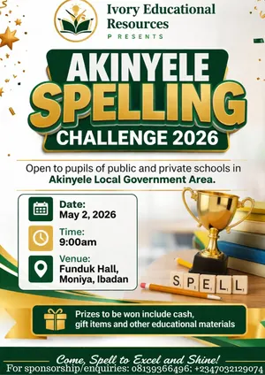

About the Challenge
Promoting literacy, academic confidence and healthy competition among primary school pupils across Akinyele LGA, Ibadan.
Presented by Ivory Educational Resources, the Akinyele Spelling Challenge 2026 is a grassroots competition designed to promote literacy, academic confidence and healthy competition among primary school pupils.
Open to pupils of both public and private schools, every participating school was invited to register up to two representatives. Over 50 pupils from twenty schools showed up on the day, each prepared from an official 100-word study list.
Convened by Pastor Olatunde “Moore” Ayo-Moore, Chief Education Officer of Ivory Educational Resources, the maiden edition was run by a small volunteer committee with logistics led by Techbase Consultant Services.
Covered by National Daily News and Online News Hub within days of the finale. Both noted that organisers are already planning a Maths and Science Challenge for later in the year.

Mosh Estrella Institute, MECAF Foundation, SDC Photography and RCCG Kingdom Diplomats all lent a hand to bring the maiden edition to life. See the full organising team & partners.
“You are doing that child a great good by exposing him or her to this great opportunity.”